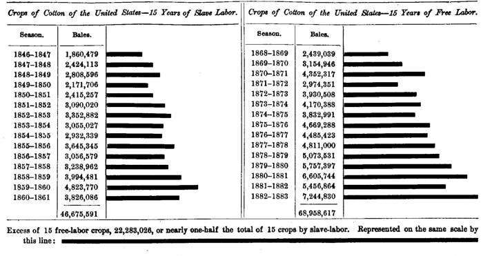

Chapter 36: Of The Competition Of Different Countries In The Same Market¶
36.1 § 1. Causes which enable one Country to undersell another¶
In the phraseology of the Mercantile System, there is no word of more frequent recurrence or more perilous import than the word underselling. To undersell other countries—not to be undersold by other countries—were spoken of, and are still very often spoken of, almost as if they were the sole purposes for which production and commodities exist.
Nations may, like individual dealers, be competitors, with opposite interests, in the markets of some commodities, while in others they are in the more fortunate relation of reciprocal customers. The benefit of commerce does not consist, as it was once thought to do, in the commodities sold; but, since the commodities sold are the means of obtaining those which are bought, a nation would be cut off from the real advantage of commerce, the imports, if it could not induce other nations to take any of its commodities in exchange; and in proportion as the competition of other countries compels it to offer its commodities on cheaper terms, on pain of not selling them at all, the imports which it obtains by its foreign trade are procured at greater cost.
One country (A) can only undersell another (B) in a given market, to the extent of entirely expelling her from it, on two conditions: (1) In the first place, she (A) must have a greater advantage than the second country (B) in the production of the article exported by both; meaning by a greater advantage (as has been already so fully explained) not absolutely, but in comparison with other commodities; and (2) in the second place, such must be her (A's) relation with the customer-country in respect to the demand for each other's products, and such the consequent state of international values, as to give away to the customer-country more than the whole advantage possessed by the rival country (B); otherwise the rival will still be able to hold her ground in the market.
Let us suppose a trade between England and the United States, in iron and wheat. England being capable of producing ten cwts. of iron at the same cost as fifteen bushels of wheat, the United States at the same cost as twenty bushels, and the two commodities being exchanged between the two countries (cost of carriage apart) at some intermediate rate, say ten for seventeen. The United States could not be permanently undersold in the English market, and expelled from it, unless by a country (such as India) which offered not merely more than seventeen, but more than twenty bushels of wheat for ten cwts. of iron. Short of that, the competition would only oblige the United States to pay dearer for iron, but would not disable her from exporting wheat. The country, therefore, which could undersell the United States, must, in the first place, be able to produce wheat at less cost, compared with iron, than the United States herself; and, in the next place, must have such a demand for iron, or other English commodities, as would compel her, even when she became sole occupant of the market, to give a greater advantage to England than the United States could give by resigning the whole of hers; to give, for example, twenty-one bushels for ten cwts. For if not—if, for example, the equation of international demand, after the United States was excluded, gave a ratio of eighteen for ten—the United States would be now the underselling nation; and there would be a point, perhaps nineteen for ten, at which both countries would be able to maintain their ground, and to sell in England enough wheat to pay for the iron, or other English commodities, for which, on these newly adjusted terms of interchange, they had a demand. In like manner, England, as an exporter of iron, could only be driven from the American market by some rival whose superior advantages in the production of iron enabled her, and the intensity of whose demand for American produce compelled her, to offer ten cwts. of iron, not merely for less than seventeen bushels of wheat, but for less than fifteen. In that case, England could no longer carry on the trade without loss; but, in any case short of this, she would merely be obliged to give to the United States more iron for less wheat than she had previously given.1
It thus appears that the alarm of being permanently undersold may be taken much too easily; may be taken when the thing really to be anticipated is not the loss of the trade, but the minor inconvenience of carrying it on at a diminished advantage; an inconvenience chiefly falling on the consumers of foreign commodities, and not on the producers or sellers of the exported article. It is no sufficient ground of apprehension to the [American] producers, to find that some other country can sell [wheat] in foreign markets, at some particular time, a trifle cheaper than they can themselves afford to do in the existing state of prices in [the United States]. Suppose them to be temporarily unsold, and their exports diminished; the imports will exceed the exports, there will be a new distribution of the precious metals, prices will fall, and, as all the money expenses of the [American] producers will be diminished, they will be able (if the case falls short of that stated in the preceding paragraph) again to compete with their rivals.
The loss which [the United States] will incur will not fall upon the exporters, but upon those who consume imported commodities; who, with money incomes reduced in amount, will have to pay the same or even an increased price for all things produced in foreign countries.
But the business world would regard what was going on under economic laws as a great and dreaded disaster, if it meant that prices were to fall, and gold leave the country. Those holding large stocks of goods would for that time suffer; and so, at first, it might really happen that “exporters,” in the sense of exporting agents (not the producers, perhaps, of the exportable article), would incur a loss. In the end, of course, the consumers of imports suffer. But, temporarily, and on the face of it, exporters do lose.
36.2 § 2. High wages do not prevent one Country from underselling another¶
According to the preceding doctrine, a country can not be undersold in any commodity, unless the rival country has a stronger inducement than itself for devoting its labor and capital to the production of the commodity; arising from the fact that by doing so it occasions a greater saving of labor and capital, to be shared between itself and its customers—a greater increase of the aggregate produce of the world. The underselling, therefore, though a loss to the undersold country, is an advantage to the world at large; the substituted commerce being one which economizes more of the labor and capital of mankind, and adds more to their collective wealth, than the commerce superseded by it. The advantage, of course, consists in being able to produce the commodity of better quality, or with less labor (compared with other things); or perhaps not with less labor, but in less time; with a less prolonged detention of the capital employed. This may arise from greater natural advantages (such as soil, climate, richness of mines); superior capability, either natural or acquired, in the laborers; better division of labor, and better tools, or machinery. But there is no place left in this theory for the case of lower wages. This, however, in the theories commonly current, is a favorite cause of underselling. We continually hear of the disadvantage under which the [American] producer labors, both in foreign markets and even in his own, through the lower wages paid by his foreign rivals. These lower wages, we are told, enable, or are always on the point of enabling, them to sell at lower prices, and to dislodge the [American] manufacturer from all markets in which he is not artificially protected.
It will be remembered that, as we have before seen, international trade, in actual practice, depends on comparative prices within the same country (even though the exporter may not consciously make a comparison). We send wheat abroad, because it is low in price relatively to certain manufactured goods; that is, we send the wheat, but we do not send the manufactured goods. But, so far, this is considering only the comparative prices in the same country. Yet we shall fail to realize in actual practice the application of the above principles, when we use the terms prices and money, if we do not admit that there is in the matter of underselling a comparison, also, between the absolute price of the goods in one country and the absolute price of the same goods in the competing country. For example, wheat is not shipped to England unless the price is lower here than there. If India or Morocco were to send wheat into the English market in close competition with the United States, and the price were to fall in London, it would mean that, if we continued our shipments of wheat to England, we must part with our wheat at a less advantage in the international exchange. In the illustration already used, we must, for example, offer more than seventeen bushels of wheat for ten cwts. of iron. The fall in the price of wheat, without any change in that of iron, implies the necessity of offering a greater quantity of wheat for the same quantity of iron, perhaps nineteen or twenty bushels for ten cwts. of iron. If the price went so low as to require twenty-one bushels to pay for ten cwts. of iron, then we should be entirely undersold; and the price here as compared with the price in London would be an indication of the fact. So that the comparison of prices here with prices abroad is merely a register of the terms at which our international exchanges are performed; but not the cause of the existence of the international trade. If the price falls so low in a foreign market that we can not sell wheat there, it simply means that we have reached in the exchange ratios the limit of our comparative advantages in wheat and iron; so that we are obliged to offer twenty or more bushels of wheat for ten cwts. of iron.
But in all this it must be noted that this price must include the return to capital also, and that it must be equal to the usual reward for capital in other competing industries, that is, the ordinary rate of profit. In exporting wheat from the United States the capital engaged will insist on getting the rate of profit to be found in other occupations to which the capital can go, in the United States. Now, the price, if it stands for the value (which is supposed to be governed by cost of production in this case), is the sum out of which wages and profits are paid. If the price were to fall in the foreign market, then there might not be the means with which to pay the usual rate of wages and the usual rate of profit also. Then we should probably hear of complaints by the shippers that there is no profit in the exportation of wheat, and of a falling off in the trade. In other words, as the capitalist is the one who manages the operation, and is the one first affected, the diminution of advantage in foreign trade arising from competition, generally shows itself first in lessened profits. The price, then, is the means by which we determine whether a certain article gives us that comparative advantage which will insure a gain from international trade.
An exportable article whose price in this country is low—since it is for this reason selected as an export—is one whose cost is low. If the cost be low, it means that the industry is very productive; that the same capital and labor produce more for their exertion in this than in other industries. And yet it is precisely in the most productive industries that higher wages and profits can be, and are, paid. Although each article is sold at a low price, the great quantity produced makes the total sum, or value, out of which the industrial rewards, profits, and wages, are paid, large. That is, the price may be very low (lower, also, in direct comparison with prices abroad) and yet pay the rate of wages and profits current in this country. Consequently, although wages and profits may be very high (relatively to older countries) in those industries of the United States whose productiveness is great, yet the very fact of this low cost, and consequently this low price (where competition is effective), is that which fits the commodity for exportation. We are, therefore, inevitably led to a position in which we see that high wages and low prices naturally go together in an exportable commodity. In practice, certainly, the high wages do not, by raising the price, prevent us, by comparing our price with English prices, from sending goods abroad—because we send goods abroad from our most productive employments. As an illustration of this principle, it is found that the leading exports of the United States, in 1883, were cotton, breadstuffs, provisions, tobacco, mineral oils, and wood.
But, since a direct comparison is in practice made between prices here and prices in England (for example), in order to determine whether the trade can be a profitable one, we constantly hear it said that we can not send goods abroad because our labor is so dear. It need scarcely be observed that we do not hear this from those engaged in any of the extractive industries just mentioned as furnishing large exports, which are admittedly very productive; it is generally heard in regard to certain kinds of manufactured goods. The difficulty arises not with regard to articles in which we have the greatest advantage in productiveness, but those in which we have a less advantage. If the majority of occupations are so productive as to assure a generally high reward to labor and capital throughout the country, these less advantageously situated industries—not being so productive as others (either from lack of skill or good management, or high cost of machinery and materials, or peculiarities of climate, or heavy taxation)—can not pay the usual high reward to labor, and at the same time get for the capitalist the same high reward he can everywhere else receive at home. For, at a price low enough to warrant an exportation, the quantity made by a given amount of labor and capital does not yield a total value so great as is given in the majority of other occupations to the same amount of labor and capital, and out of which the usual high wages and profits can be paid. The less productiveness of an industry, compared with other industries in the same country, then, is the real cause which prevents it from competing with foreign countries consistently with receiving the ordinary rate of profit. It is the high rate of profits as well as the high rate of wages common in the country which prevents selling abroad. It is absurd to say that it is only high wages: it is just as much high profits. Of course, if the less productive industries wish to compete with England, and if they pay—as we know they must—the high rate of wages due to the general productiveness of our country's industries, they must submit to less profits for the pleasure of having that particular desire. It is not possible that we should produce everything equally well here; nor is it possible that England should produce everything equally well. If we wish to send any goods at all to England, we must receive some goods from her. In order to get the gain arising from our productiveness, we must earnestly wish that England should have some commodity also in which she has a comparative advantage, in order that any trade whatever may exist. It is not, however, worth while, in my opinion, to go on in this discussion to consider the position of those who would shut us off from any and all foreign trade.
Our present high wages should be a cause for congratulation, because they are due to the generally high productiveness of our resources, or, in other words, due to low cost; and it is to be hoped that they may long continue high. We do not seem to be in imminent danger of not having goods which we can export in quantities which will buy for us all we may wish to import from abroad. (See Chart No. XIII, and note the vast increase of exports at the same time that wages are known to be higher in this country than abroad.) So long as wages continue high, we may possibly be unwilling to see gratified that false and ignorant desire which leads some people to think that we ought to produce, equally well with any competitor in the world, everything that is made. If, as was pointed out under the discussion on cost of labor,2 we must necessarily connect with efficiency of labor all natural advantages under which labor works, it is easy to see that high wages are entirely consistent with low prices; and that high wages do not prevent us to-day from having an hitherto unequaled export trade. Even if all wages and all profits were lower, it would, however, affect all industries alike, and some would still be more productive relatively to others, and the same inequality would remain. If, however, we learn to use our materials better, use machinery with more effect on the quantity produced, adapt our industries to our climate, get the raw products more cheaply, free ourselves from excessive and unreasonable taxation, it would be difficult to say what commodities we might not be able eventually to manufacture in competition with the rest of the world. For we have scarcely ever, as a country, had the advantage of such conditions to aid us in our foreign trade.
Mr. Mill now goes on to consider the suggestive fact that wages are higher in England than on the Continent, and yet that the English have no difficulty in underselling their Continental rivals.
Before examining this opinion on grounds of principle, it is worth while to bestow a moment's consideration upon it as a question of fact. Is it true that the wages of manufacturing labor are lower in foreign countries than in England, in any sense in which low wages are an advantage to the capitalist? The artisan of Ghent or Lyons may earn less wages in a day, but does he not do less work? Degrees of efficiency considered, does his labor cost less to his employer? Though wages may be lower on the Continent, is not the Cost of Labor, which is the real element in the competition, very nearly the same? That it is so seems the opinion of competent judges, and is confirmed by the very little difference in the rate of profit between England and the Continental countries. But, if so, the opinion is absurd that English producers can be undersold by their Continental rivals from this cause. It is only in America that the supposition is prima facie admissible. In America wages are much higher than in England, if we mean by wages the daily earnings of a laborer; but the productive power of American labor is so great—its efficiency, combined with the favorable circumstances in which it is exerted, makes it worth so much to the purchaser—that the Cost of Labor is lower in America than in England; as is proved by the fact that the general rate of profits and of interest is very much higher.
36.3 § 3. Low wages enable a Country to undersell another, when Peculiar to certain branches of Industry¶
But is it true that low wages, even in the sense of low Cost of Labor, enable a country to sell cheaper in the foreign market? I mean, of course, low wages which are common to the whole productive industry of the country.
If wages, in any of the departments of industry which supply exports, are kept, artificially or by some accidental cause, below the general rate of wages in the country, this is a real advantage in the foreign market. It lessens the comparative cost of production of those articles in relation to others, and has the same effect as if their production required so much less labor. Take, for instance, the case of the United States in respect to certain commodities. In that country tobacco and cotton, two great articles of export, are produced by slave-labor, while food and manufactures generally are produced by free laborers, who either work on their own account or are paid by wages. In spite of the inferior efficiency of slave-labor, there can be no reasonable doubt that, in a country where the wages of free labor are so high, the work executed by slaves is a better bargain to the capitalist. To whatever extent it is so, this smaller cost of labor, being not general, but limited to those employments, is just as much a cause of cheapness in the products, both in the home and in the foreign market, as if they had been made by a less quantity of labor. If the slaves in the Southern States were emancipated, and their wages rose to the general level of the earnings of free labor in America, that country might be obliged to erase some of the slave-grown articles from the catalogue of its exports, and would certainly be unable to sell any of them in the foreign market at the present price. Their cheapness is partly an artificial cheapness, which may be compared to that produced by a bounty on production or on exportation; or, considering the means by which it is obtained, an apter comparison would be with the cheapness of stolen goods.

How far Mr. Mill was in error may be seen by Chart No. XV, which shows the enormous increase of cotton production under the régime of free labor as compared with that of slave-labor in the United States. The abolition of slavery has been an economic gain to the South. Moreover, the exports of raw cotton have increased from 644,327,921 pounds in 1869, to 2,288,075,062 pounds in 1883; while for corresponding years the exports of tobacco increased from 181,527,630 to 235,628,360 pounds. In other words, exports of tobacco were increased by 30 per cent, and those of raw cotton by no less than 255 per cent. Besides, the prices of cotton and tobacco are no higher now than before 1850.
An advantage of a similar economical, though of a very different moral character, is that possessed by domestic manufactures; fabrics produced in the leisure hours of families partially occupied in other pursuits, who, not depending for subsistence on the produce of the manufacture, can afford to sell it at any price, however low, for which they think it worth while to take the trouble of producing. The workman of Zürich is to-day a manufacturer, to-morrow again an agriculturist, and changes his occupations with the seasons in a continual round. Manufacturing industry and tillage advance hand in hand, in inseparable alliance, and in this union of the two occupations the secret may be found why the simple and unlearned Swiss manufacturer can always go on competing and increasing in prosperity in the face of those extensive establishments fitted out with great economic and (what is still more important) intellectual resources.
In the case of these domestic manufactures, the comparative cost of production, on which the interchange between countries depends, is much lower than in proportion to the quantity of labor employed. The work-people, looking to the earnings of their loom for a part only, if for any part, of their actual maintenance, can afford to work for a less remuneration than the lowest rate of wages which can permanently exist in the employments by which the laborer has to support the whole expense of a family. Working, as they do, not for an employer but for themselves, they may be said to carry on the manufacture at no cost at all, except the small expense of a loom and of the material; and the limit of possible cheapness is not the necessity of living by their trade, but that of earning enough by the work to make that social employment of their leisure hours not disagreeable.
36.4 § 4. —But not when common to All¶
These two cases, of slave-labor and of domestic manufactures, exemplify the conditions under which low wages enable a country to sell its commodities cheaper in foreign markets, and consequently to undersell its rivals, or to avoid being undersold by them. But no such advantage is conferred by low wages when common to all branches of industry. General low wages never caused any country to undersell its rivals, nor did general high wages ever hinder it from doing so.
To demonstrate this, we must turn to an elementary principle which was discussed in a former chapter.3 General low wages do not cause low prices, nor high wages high prices, within the country itself. General prices are not raised by a rise of wages, any more than they would be raised by an increase of the quantity of labor required in all production. Expenses which affect all commodities equally have no influence on prices. If the maker of broadcloth or cutlery, and nobody else, had to pay higher wages, the price of his commodity would rise, just as it would if he had to employ more labor; because otherwise he would gain less profit than other producers, and nobody would engage in the employment. But if everybody has to pay higher wages, or everybody to employ more labor, the loss must be submitted to; as it affects everybody alike, no one can hope to get rid of it by a change of employment; each, therefore, resigns himself to a diminution of profits, and prices remain as they were. In like manner, general low wages, or a general increase in the productiveness of labor, does not make prices low, but profits high. If wages fall (meaning here by wages the cost of labor), why, on that account, should the producer lower his price? He will be forced, it may be said, by the competition of other capitalists who will crowd into his employment. But other capitalists are also paying lower wages, and by entering into competition with him they would gain nothing but what they are gaining already. The rate, then, at which labor is paid, as well as the quantity of it which is employed, affects neither the value nor the price of the commodity produced, except in so far as it is peculiar to that commodity, and not common to commodities generally.
However, without there being any change in the productiveness of any industry, if the price of the article should rise, for instance, from an increased demand, that would make the total value arising from the products of the industry larger in its purchasing power, and so there would be a larger sum to be divided among labor and capital. If there be free competition, more capital would move into this one industry under the hope of larger profits, and so wages would rise. Therefore, it is possible that high wages and high prices may go together, but not as cause and effect. In fact, the change in price generally precedes the change in wages. On the other hand, while low wages are not the cause of low prices nor high wages of high prices, yet the two may be found together, as both due to a common cause, viz., the small or great value of the total product.4
Since low wages are not a cause of low prices in the country itself, so neither do they cause it to offer its commodities in foreign markets at a lower price. It is quite true that, if the cost of labor is lower in America than in England, America could sell her cottons to Cuba at a lower price than England, and still gain as high a profit as the English manufacturer. But it is not with the profit of the English manufacturer that the American cotton-spinner will make his comparison; it is with the profits of other American capitalists. These enjoy, in common with himself, the benefit of a low cost of labor, and have accordingly a high rate of profit. This high profit the cotton-spinner must also have: he will not content himself with the English profit. It is true he may go on for a time at that lower rate, rather than change his employment; and a trade may be carried on, sometimes for a long period, at a much lower profit than that for which it would have been originally engaged in. Countries which have a low cost of labor and high profits do not for that reason undersell others, but they do oppose a more obstinate resistance to being undersold, because the producers can often submit to a diminution of profit without being unable to live, and even to thrive, by their business. But this is all which their advantage does for them; and in this resistance they will not long persevere when a change of times which may give them equal profits with the rest of their countrymen has become manifestly hopeless.
36.5 § 5. Low profits as affecting the carrying Trade¶
It is worth while also to notice a third class of small, but in this case mostly independent communities, which have supported and enriched themselves almost without any productions of their own (except ships and marine equipments), by a mere carrying-trade, and commerce of entrepot; by buying the produce of one country, to sell it at a profit in another. Such were Venice and the Hanse Towns.
When the Venetians became the agents of the general commerce of Southern Europe, they had scarcely any competitors: the thing would not have been done at all without them, and there was really no limit to their profits except the limit to what the ignorant feudal nobility could and would give for the unknown luxuries then first presented to their sight. At a later period competition arose, and the profit of this operation, like that of others, became amenable to natural laws. The carrying-trade was taken up by Holland, a country with productions of its own and a large accumulated capital. The other nations of Europe also had now capital to spare, and were capable of conducting their foreign trade for themselves: but Holland, having, from the variety of circumstances, a lower rate of profit at home, could afford to carry for other countries at a smaller advance on the original cost of the goods than would have been required by their own capitalists; and Holland, therefore, engrossed the greatest part of the carrying-trade of all those countries which did not keep it to themselves by navigation laws,5 constructed, like those of England, for the express purpose.
In the United States, early in the century, a retaliatory policy against England gave us a body of navigation laws copied after the mediæval statutes of England and the Continent, which still remain on the statute-book. They do not permit an American to buy a vessel abroad and sail it under our flag without paying enormous duties; a provision which is intended to foster ship-building in the United States. Even with this legislation, ships, as a fact, are not built here for the foreign trade; and our ship-builders practically supply the coasting-trade only (which is not open to foreigners). The ability to buy ships anywhere, and enter them to registry under our flag free of duty, is what is meant by the demand for “free ships.” This, however, has to do with ship-building. But ship-owning or ship-sailing, is quite distinct from it. The ability to get as great a return from capital and labor invested in a ship as from other occupations open to Americans is another thing. Even if we had “free ships,” the higher returns in other industries in our country, particularly as regards profits, might cause capitalists naturally to neglect a less for a more productive business. In 1884 Congress has very properly taken away many vexatious restrictions upon ships, which diminished the returns from ship-sailing, and it remains to be seen whether we can thereby regain any of our foreign carrying-trade. At present we have a very small tonnage even in that part of the shipping engaged in carrying our own goods.
-
In this illustration I have retained as nearly as possible the form of that given by Mr. Mill for the trade between England and Germany in cloth and linen. ↩
-
Book II, Chap. V, § 5. ↩
-
Book II, Chap. II, § 3. ↩
-
Cf. Cairnes, “Leading Principles,” p. 209. ↩
-
For a brief bibliography on our own Navigation Laws and the Shipping Question, see Appendix I. ↩